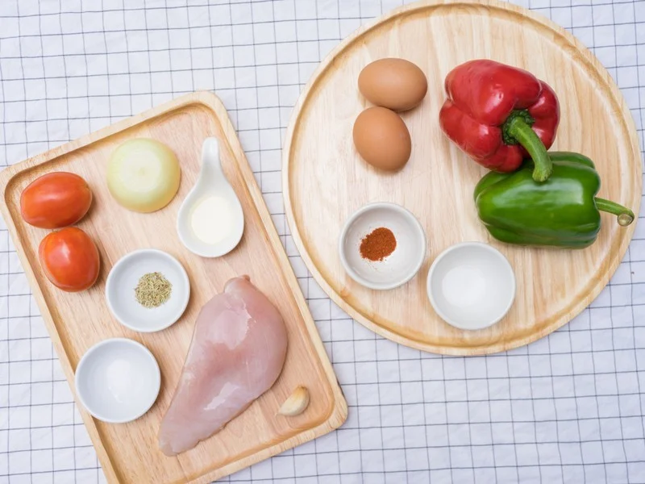
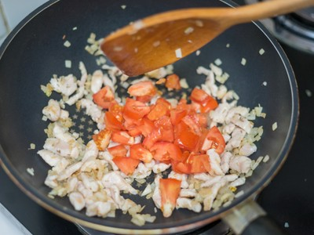
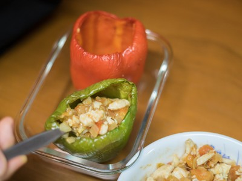

พริกหวานยัดไส้ไขมันต่ำ
200 Kcal/เสิร์ฟ
พริกหวานเป็นผักที่หลาย ๆ คนไม่ชอบทาน เนื่องจากมีกลิ่นเหม็นเขียวและรสชาติที่ไม่ถูกปาก แต่จริง ๆ แล้วพริกหวานมีประโยชน์อย่างมาก มีสาร Capsaicin ซึ่งเป็นสารต้านอนุมูลอิสระ ช่วยคลายเครียด แถมยังช่วยกระตุ้นการทำงานของระบบย่อยอาหารอีกด้วย ดีขนาดนี้จะพลาดได้อย่างไร วันนี้จึงอยากนำเสนอเมนูเพื่อสุขภาพที่ช่วยเปลี่ยนรสชาติพริกหวานให้หวานสมชื่อ มีความนุ่มและหอมมากกว่าเดิม กับเมนู “พริกหวานยัดไส้ไขมันต่ำ” เมนูที่จะเปลี่ยนความคิดของคนไม่ชอบทานผัก โดยเฉพาะพริกหวานให้กลับมาทานได้จนหมดทั้งจาน!
วิธีทำ “พริกหวานยัดไส้ไขมันต่ำ” เมนูอาหารคลีน ที่ทำง่าย ๆ ได้ที่บ้าน
วัตถุดิบ
1. พริกหวาน 2 ลูก2. ผงปาปริก้า 1 ช้อนชา
3. เกลือ 1 ช้อนชา
4. อกไก่ 1 ชิ้น
5. มะเขือเทศ 2 ลูก
6. กระเทียม 1 กลีบ
7. หอมใหญ่ ½ ลูก
8. เกลือ 1 ½ ช้อนชา
9. โรสแมรีแห้ง 1 ช้อนชา
10. น้ำมันมะกอก 1 ช้อนโต๊ะ
11. ไข่ไก่ 2 ฟอง
วิธีทำ
STEP 1 : พริกย่างหวาน
- วอร์มเตาอบที่อุณหภูมิ 180 องศาเซลเซียส- ใช้มีดตัดขั้วพริกหวานออก ทำความสะอาด และนำเม็ดพริกออกให้หมด ปรุงรสและกลิ่นด้วยเกลือ และผงปาปริก้า จากนั้นเกลี่ยให้ทั่วด้านในของพริกหวาน
- นำพริกเข้าไปย่างในเตาอบจนสุก ใช้เวลาประมาณ 25 นาทีค่ะ
ตัดขั้วพริกหวานออก ปรุงรสด้วยเกลือและผงปาปิก้า
STEP 2 : ผัดไส้พริกหวาน
- หั่นอกไก่เป็นลูกเต๋าเล็ก ๆ จากนั้นปรุงรสด้วยเกลือ แล้วคลุกเคล้าให้เข้ากันจากนั้นพักไว้- ซอยหอมใหญ่และกระเทียม แล้วหั่นมะเขือเทศเป็นชิ้นเล็ก ๆ พักไว้
- ตั้งกระทะบนเตาแก๊สโดยใช้ไฟกลาง จากนั้นใส่น้ำมันมะกอก เมื่อน้ำมันเริ่มร้อนใส่กระเทียมและหอมใหญ่ผัดจนเริ่มใส
- ต่อด้วยการใส่อกไก่ผัดให้เกือบสุก จากนั้นปรุงรสด้วยเกลือที่เหลือและโรสแมรีแห้ง
- ใส่มะเขือเทศลงไปผัดเรื่อยๆ จนน้ำมะเขือเทศนุ่มและคายน้ำออกมา จากนั้นตักขึ้นพักไว้ค่ะ

ปรุงรสอกไก่ด้วยเกลือ ใส่มะเขือเทศลงไปผัดจนนุ่ม
STEP 3 : ยัดไส้พริหวานและจัดเสิร์ฟ
- ตักไส้ที่ผัดแล้วใส่ในพริกหวานที่ย่างจนสุกหอม- ตอกไข่ลงไปด้านบน จากนั้นนำไปอบต่อด้วยอุณหภูมิ 180 องศาเซลเซียส เป็นเวลา 10-12 นาทีพร้อมอร่อยแล้วจ้า มาจัดเสิร์ฟกันได้เลย
Tip :สามารถโรยหน้าด้วยชีสไขมันต่ำก่อนเข้าเตาอบ เพื่อเพิ่มความอร่อยเข้าไปอีก ทานกับซอสมะเขือเทศหรือซอสพริกได้ตามชอบเลยค่ะ 